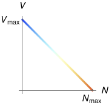
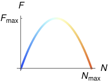
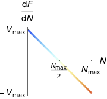

Source code for images: code.wl
Return to the home page.
This page summarises the simple continuum model for single-lane traffic. For some cool animations, see the following:
With the exception of tailgaters, drivers tend to go slower when the traffic is denser. The simplest model is a linear relationship between the density N (amount of vehicle per length of road) and the preferred speed V:

We also assume that drivers are able to adjust their speed instantly when the density changes. This might not seem realistic, but remember we are constructing a model. (Also note that in real life, most drivers are happy to do the speed limit even when the density isn't zero, by keeping at a 2-second separation to the vehicle ahead.)
Traffic engineers generally want to maximise the flux of traffic, which is the product of density and speed:

In our current model this is a parabolic relationship:
Note that there are two ways to achieve a given flux F < \Fmax: fast & sparse, and slow & dense (with the former being preferable to drivers).
| Independent variables | |
|---|---|
| x | position |
| t | time |
| Dependent variable | |
| N | density |
After doing the usual conservation analysis (here, "conservation of vehicle"), we obtain the continuity equation
and since we have a direct relationship F = F (N) between flux and density, this becomes the traffic equation
The quantity \td F / {\td N} has dimensions of speed, and varies linearly from +\Vmax at zero density to -\Vmax at maximum density:

It turns out that \td F / {\td N} is the signal speed for the local density:
Unlike the heat equation, the traffic equation is a hyperbolic PDE. Instead of separation of variables, we use the method of characteristics.
We seek characteristic curves x = \xc (t) along which the density N (x, t) is constant, i.e.
By definition \td N = 0 along a characteristic, and using the chain rule we have
Comparing this with the traffic equation
we see that the characterstics are given by
Thus the characteristics are straight lines in spacetime with slope equal to the signal speed \td F / {\td N}.
Note that characteristics are NOT the trajectories of the cars; they are curves along which density is constant.
Given a traffic problem:
Since characteristics are curves with constant density N, this procedure "extends" the boundary/initial values of N to all of spacetime. In other words, we've solved for N (x, t). That's all there is to do.
If we wanted to find the actual trajectories x = x (t) of the cars, we would:
Finally, since time is on the vertical axis, remember that "fast" trajectories are near-horizontal while "slow" trajectories are near-vertical.
Examples: